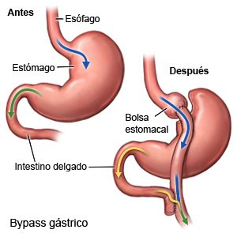
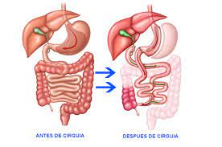
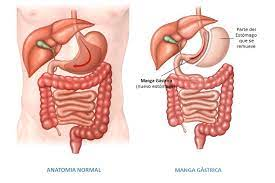

Tipos |
|
Bypass gástrico (en Y de Roux)Consiste en crear una pequeña bolsa desde el estómago y conectar la bolsa recién creada directamente con el intestino delgado. Después del baipás gástrico, los alimentos ingeridos entrarán en esta pequeña bolsa del estómago y, a continuación, directamente en el intestino delgado, sin pasar por la mayor parte del estómago y la primera sección del intestino delgado. |
 |
Derivación biliopancreática con cruce duodenalLa derivación biliopancreática con cruce duodenal limita la cantidad de comida que puedes comer y reduce la absorción de nutrientes, incluidas las proteínas y las grasas. Conlleva dos pasos principales:
|
 |
Gastrectomía en mangaSe realiza generalmente de forma laparoscópica, lo cual incluye la inserción de pequeños instrumentos a través de múltiples incisiones pequeñas en la parte superior del abdomen. Durante el procedimiento de manga gástrica laparoscópica, se extirpa un 80 % del estómago, el cual adquiere la forma de una bolsa larga tubular, del tamaño y la forma de un plátano. La limitación del tamaño del estómago restringe la cantidad de alimentos que puedes consumir. Además, el procedimiento provoca cambios hormonales que ayudan a perder peso. Los mismos cambios hormonales también ayudan a aliviar las afecciones asociadas con el sobrepeso, como presión arterial alta o la enfermedad cardíaca. |
 |